## Exploring High-Dimensional Data with Python, SQL & ParaView Jon Woodring 2022-Sept-15
## Outline - Array vs. Relational - SQLite in Python - SQL queries with vis & analysis - SQLite in ParaView - Job(s) Advertisements
## Content <http://github.com/jonwoodring> - Slides - Data sets - Example Jupyter (Python) Notebook - SQLite helper functions for Python - SQLite reader for ParaView
## Motivation - When receiving data, whether it is for ML, scientific modeling, etc. your first step should be exploration: otherwise, *garbage in, garbage out* - Especially with many dimensions (columns, features, etc.) or many rows (big data) - Relational databases are incredibly useful for interactive exploration of high-dimensional data - How do we combine databases with existing tools? (vis, analysis, ML, scientific computing, etc.)
## Array vs. Relational Some terminology & background
#### My biased hypothesis - My assumption: To explore and to get an intuition of a data set, we need to be able to search, aggregate, and subset it efficiently in human time scales - Not computational speed, but how easy it is - Array data formats and array languages are the wrong tool set for data exploration - Relational data sets (databases) are the better tools, and should be used more often
#### Notes & caveats before moving on - My opinion is that students don't get enough exposure to relational databases - There are many existing technologies out there that blur the lines between array and relational models - Spark, Dask, Pandas, Parquet; to name just a few - If you already know everything here, *That's great!* Feel free to use my code, however you want - This talk isn't meant to stop you from using other tools and languages, if you like them better or are more productive *(I hope you learn something new)*
#### So, What do I mean by an array? - It's an ordered series of values - An array of 5 integers in memory: *7, 0, 42, -11, 212* - We select an item by its ordinal position - For example, the third item (row) has value 42 - Other features of arrays, with respect to computers - Usually, contiguous (no gaps) in memory - Usually, the same data type for all values - Constant time *(O(1))* lookup of the *n*<sup>th</sup> item - Multi-dimensional arrays (1D, 2D, 3D, ...)
#### A Python numpy array, printing the 3rd ```python a = numpy.array([7, 0, 42, -11, 212]) print(a[2]) # select the 3rd item (0 indexing) ``` results in ```python 42 ``` - Python *numpy* array values are are *zero indexed* - Nowadays, it's common for most languages to do *zero indexing*, but there are those that do a positive-integer 1-based indexing (R, Fortran, etc.)
#### A brief aside on Python lists vs. numpy arrays In Python, lists are a C++ vector of pointers of objects ```c++ vector<PyObject *> a(5); a[0] = new PyObject; *(a[0]) = ...code to create a "boxed value" of 7...; ... ``` A Python numpy array is a C-array of a single type ```c int* a = malloc(sizeof(int)*5); a[0] = 7; ``` numpy arrays are faster computation due to direct access, no *unboxing* of values, and *pointer chasing*
#### What do **I** mean by a relational data set? - *I know it when I see it...* (not a definition) - "Something that looks like a database" - E.F. Codd, *A Relational Model of Data for Large Shared Data Banks.* CACM, 1970. - IBM Research → System R → SEQUEL → SQL (**S**tructured **Q**uery **L**anguage) - (1) "... where the data are a set of unordered rows" - (2) "... and a subset can be *searched* for via queries" - *Search* is important for interactive data exploration
#### Where the data are a set of unordered values In Python, we can have a set of values, with no order ```python s = set([7, 0, 42, -11, 212]) print(s[2]) # select the 3rd value? ``` results in ```python --------------------------------------------------------------------------- TypeError Traceback (most recent call last) Input In [6], in <cell line: 2>() 1 s = set([7, 0, 42, -11, 212]) ----> 2 print(s[2]) TypeError: 'set' object is not subscriptable ``` that doesn't work...
#### Difference between a set and an array - Relational sets have no inherent ordering - What do I mean when I want the 3rd value in a set? - I want to select the data using an (arbitary) monotonically increasing order (a key or index), associated with each row ```python # enumerate provides a monotonically increasing value # based on the list order (counting up from 0) s = set(enumerate([7, 0, 42, -11, 212])) ``` now, each data value (row) has a key or index value associated with an arbitrary ordering
#### (1) How do I get the "3rd value" from a set? ```python print(s) ``` results in ```python {(0, 7), (4, 212), (2, 42), (1, 0), (3, -11)} ``` where the first element (column) in each row is an ordering I created - Python didn't order it by the enumeration when it printed it, because it's still an unordered set - To get the 3rd value, we need a search algorithm over the first column (we'll call that column 'row id')
#### (2) How do I get the "3rd value" from a set? ```python # select the 3rd value for rowid, value in s: # enumerate over all of the rows if rowid == 2: # if the first column is 2 print(value) # print the second column ``` results in ```python 42 ``` notice, this has a linear *(O(n))* time complexity, whereas searching for a row id in an *array* has a constant *(O(1))* time complexity: *more on this later*
#### Getting a subset of values from a data set Now we've met my second criteria of what I think relational data are, and why it's important: *Being able to query it for some subset of values* - We're on our way to implementing a relational database: we've implemented *where* (exclusion) and *select*ion of columns (projection) - What's missing compared to existing DBs? Lots!
#### Let's make an accelerated search index Let's make a constant time index for row id ```python # constant time lookup for rows using the first column # (because a Python dictionary is a hash-map) rowid_index = {row[0]: row for row in s} print(rowid_index) # what if rowid isn't unique? would this work? # print the 2nd column where the first column is 2 print(rowid_index[2][1]) # ...a bit of ugly syntax, IMO ``` results in ```python {0: (0, 7), 4: (4, 212), 2: (2, 42), 1: (1, 0), 3: (3, -11)} 42 ```
#### Searching for data - Arrays are constant time lookup on a row id, because it's a memory address hash map - Relational databases have no inherent ordering on row id, or bias towards indexing: searches are always linear time unless we introduce an index - *But,* what if we wanted to search the *array* for 42? - "Tell me the row id that has value 42" - It's linear search time for the array, unless we make an index for the array, too!
#### Searching row id in the array that is value 42 ```python # searching for value 42, what's the row id? # array, we have to enumerate the values for rowid, value in enumerate(a): if value == 42: print(rowid) # or in numpy syntax (it's still a linear search) print(numpy.where(a == 42)) ``` we can do it for the set, too ```python # the set already has rowid for rowid, value in s: if value == 42: print(rowid) ```
#### Searching arrays for a subset of data - Arrays only allow for efficient query by row id - *To do search over data the way that a relational database can, we need to re-implement:* - Indexing, backing storage, streaming from storage - Set operations: union, intersection, difference - Arbitrary ordering, group by, aggregates - **Joins** (combining data on indices) and products - Implicit "for" loops: databases are implicitly data parallel (i.e., declarative) over all data
## Let's not re-implement databases - Getting started with SQLite in Python - SQL queries and data manipulation - Vis & analysis with SQLite
#### What is SQLite? Directly from their webpage: *SQLite is a C-language library that implements a small, fast, self-contained, high-reliability, full-featured, SQL database engine. SQLite is the most used database engine in the world. SQLite is built into all mobile phones and most computers and comes bundled inside countless other applications that people use every day.* <https://sqlite.org/index.html>
#### How *I* use SQLite in my day-to-day work - Ingest new data into a SQLite database and explore - Use SQLite's *virtual table* mechanism to explore existing data with queries (PostgreSQL can too) - *Virtual tables can be used to query existing data without needing to copy it into a database* - <https://www.sqlite.org/vtablist.html> - Use the data with many different tools - A universal data format: excepting CSV, of course: which is a database, without the query engine
#### Getting started with SQLite3 in Python ```python # sqlite 3 comes with all python installations from sqlite3 import connect # create an in-memory database (not backed to disk) memory = connect(':memory:') # create an on-disk database # if it already exists, it will open it; # otherwise, it will create a new empty database db = connect('db.sqlite') ``` `memory` and `db` are database connection objects, which we can now execute SQL queries
#### Data sets are stored in tables - A table is a "spreadsheet" or matrix with *m* rows and *n* columns (*m* values with *n* features) - A single datum is a row with *n* columns (features or dimensions) - Each column has a data type and each row can have a "no value" (NULL) for a column - Multiple tables can be in one database, like Excel can have multiple pages (tabs) per spreadsheet
#### A conceptual table in SQLite table: *mydataset* | x (int) | y (real) | z (string) | | ------- | -------- | ---------- | | 0 | 3.0 | 'a' | | 1 | 2.0 | 'b' | | 2 | 1.0 | 'c' | | 3 | 0.0 | 'd' | SQL syntax for creating data are done with `CREATE TABLE...`, `INSERT INTO...`, and `UPDATE...`
#### Creating a table and inserting data I've made some helper functions that are free to use bundled with these slides & code, to insert CSV and numpy data into a table, available in my github ```python # some helper functions to insert and query import sqlitehelpers as sql # insert raw numpy arrays into a table sql.columns2sqlite(db, 'mydataset', {'x': numpy.array([0, 1, 2, 3]), 'y': numpy.array([3.0, 2.0, 1.0, 0.0]), 'z': numpy.array(['a', 'b', 'c', 'd'])}, ['x', 'y', 'z']) # or csv data sql.csv2sqlite(db, 'mtcars', 'data/mtcars.csv') sql.csv2sqlite(db, 'iris', 'data/iris.csv') ```
#### Querying all data from a table The simplest query is to retrieve all data ```python # a cursor is an iterator, given some query cursor = db.cursor() # the simplest query is to select all data # SQL statement: select all rows, and all columns # (* means all columns) from mydataset cursor.execute('select * from mydataset') # SELECT <column_names> FROM <table_name> ``` Without explicit exclusion ("there exists a row" (∃), the `WHERE` statement), SQL will *always* operate on all rows in a table: there's an implicit "for all" (∀)
#### In python, a cursor is an iterator ```python # in Python, a cursor is an iterator for row in cursor: print(row) ``` results in ```python (0, 3.0, 'a') (1, 2.0, 'b') (2, 1.0, 'c') (3, 0.0, 'd') ``` We can have multiple cursors for different queries, each iterating over a different set of data: in Python, we can get it all of the data into a list with `cursor.fetchall()`
#### More helper functions to retrieve data ```python # retrieve as a list of arrays (column oriented) print(sql.query2colarr(db, 'select * from mydataset')) # retrieve as a dict of arrays (column oriented) print(sql.query2coldict(db, 'select * from mydataset')) # retrieve as a structured array (row oriented) print(sql.query2struct(db, 'select * from mydataset', [int, float, '<U1'])) # retrieve as a 2D array (row oriented) print(sql.query2array(db, 'select * from mydataset')) ``` results in ```python [array([0, 1, 2, 3]), array([3., 2., 1., 0.]), array(['a', 'b', 'c', 'd'], dtype='<U1')] {'x': array([0, 1, 2, 3]), 'y': array([3., 2., 1., 0.]), 'z': array(['a', 'b', 'c', 'd'], dtype='<U1')} [(0, 3., 'a') (1, 2., 'b') (2, 1., 'c') (3, 0., 'd')] [['0' '3.0' 'a'] ['1' '2.0' 'b'] ['2' '1.0' 'c'] ['3' '0.0' 'd']] ```
#### SQL query to array data? - Wait a minute... I just said, "let's use relational data," but I've turned them into array data? - It's easiest to work with arrays in general programming languages: *the right tool for the job* - Generally, we only get relational style operations through libraries, like SQL and other domain specific languages; and general computation is expressed as array operations - *Workflow: SQL query → fetch data → vis & analyze*
## SQLite query primer: manipulating data - Selecting columns - Selecting rows - Ordering - Aggregates - Saving queries - Combining data
#### An aside on interactive exploration - All of the code and programming for this was done and tested using Jupyter notebooks: <https://jupyter.org/> - `tutorial.ipynb` in my github repository - Personally, I like R Markdown more than Jupyter for interactive notebooks & literate programming - Since both Python and SQL are interpreted languages, it makes it really easy to interactively visualize and explore your data
#### Table introspection The helper library provides some utilities ```python # database introspection through helper library print(sql.tablenames(db)) print(sql.tableschema(db, 'mydataset')) print(sql.columnnames(db, 'select * from mtcars')) ``` results in ```python ['mydataset', 'mtcars', 'iris'] [('x', 'int'), ('y', 'real'), ('z', 'string')] ['name', 'mpg', 'cyl', 'disp', 'hp', 'drat', 'wt', 'qsec', 'vs', 'am', 'gear', 'carb'] ``` Look at `sqlitehelpers.py` to see how it's implemented for SQL syntax
#### Projection: selecting columns It's a comma separated list of the columns that you are interested in; \* means *all columns* `SELECT <column_list> FROM <table_name>` ```python # selecting only name, mpg, and cyl from mtcars # since there are 12 columns names, mpgs, cyls = sql.query2colarr(db, 'select name, mpg, cyl from mtcars') # SQL query ``` This example returns the three columns as three arrays, named `names`, `mpgs`, and `cyls`
#### Visualizing the query with matplotlib ```python %matplotlib inline # for directly plotting in jupyter from matplotlib import pyplot pyplot.scatter(mpgs, cyls) pyplot.xlabel('miles per gallon') pyplot.ylabel('cylinders') for i, n in enumerate(names): pyplot.annotate(n, (mpgs[i], cyls[i]), rotation=90) ``` results in <br> 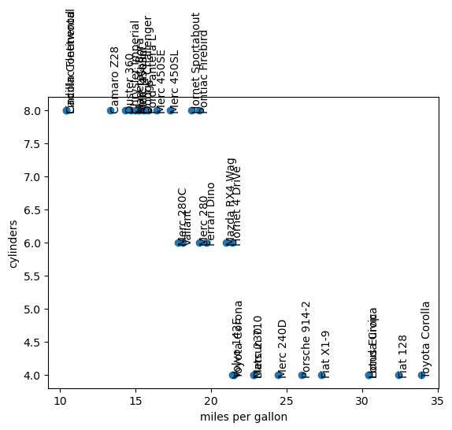
#### (1) Exclusion: selecting rows `WHERE` is appended to the `SELECT` ```python # less than 4 gears names, mpgs, cyls = sql.query2colarr(db, 'select name, mpg, cyl from mtcars where gear < 4') # SQL query pyplot.scatter(mpgs, cyls) pyplot.xlabel('miles per gallon') pyplot.ylabel('cylinders') for i, n in enumerate(names): pyplot.annotate(n, (mpgs[i], cyls[i]), rotation=90) ``` The columns used in `WHERE` do not have to appear in the selected columns: we select on `gear < 4`
#### (2) Exclusion: selecting rows Same plot as before, but `WHERE gear < 4` → 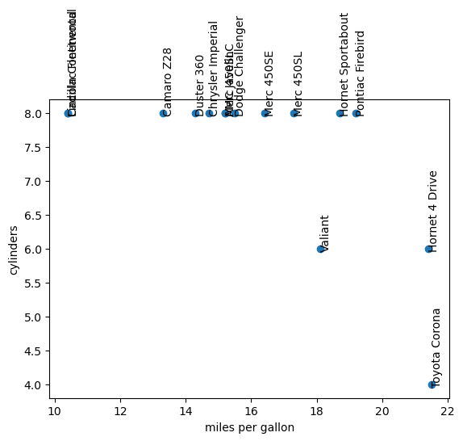 (*left:* without where, *right:* with where)
#### Ordering and limits - Retrieved rows are not explicitly *ordered* (it's a set) - To force order, we must use the `ORDER BY` clause; combined with `LIMIT` we can get the top *n* ```python # horsepower of the top 3 miles per gallon print(sql.query2struct(db, 'select name, hp from mtcars order by mpg desc limit 3', ['<U16', float])) # quarter mile time for lowest 3 hp cars print(sql.query2struct(db, 'select name, qsec from mtcars order by hp limit 3', ['<U16', float])) ``` results in ```python [('Toyota Corolla', 65.) ('Fiat 128', 66.) ('Honda Civic', 52.)] [('Honda Civic', 18.52) ('Merc 240D', 20. ) ('Toyota Corolla', 19.9 )] ```
#### (1) Ordering is important with line plots If we don't order, then line plots will come out wrong: ```python # if we don't order by displacement, the # line plot is a scribble disp, hp = sql.query2colarr(db, 'select disp, hp from mtcars') pyplot.plot(disp, hp) ``` results in 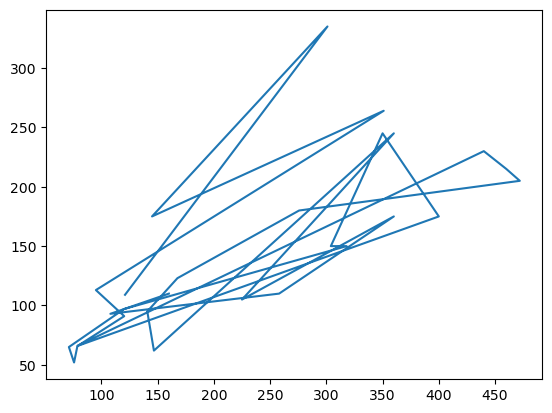
#### (2) Ordering is important with line plots ...versus ordering by the x-axis (assuming there's a linear relationship between the two variables) ```python # correctly ordered (assuming there's a linear-ish # relationship between displacement and horsepower) disp, hp = sql.query2colarr(db, 'select disp, hp from mtcars order by disp') pyplot.plot(disp, hp) ``` results in 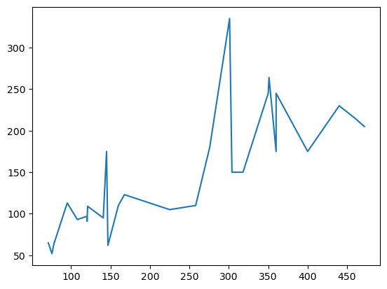
#### (3) Ordering is important with line plots We have enough SQL under our belt, now, to start down-selecting to subsets and modeling ```python hp, mpg = sql.query2colarr(db, 'select hp, mpg from mtcars where cyl = 4 order by hp') from scipy.stats import linregress regress = linregress(hp, mpg) pyplot.plot(hp, mpg); pyplot.title('4 cylinder cars') pyplot.plot(hp, regress.intercept + regress.slope*hp); pyplot.xlabel('horsepower'); pyplot.ylabel('miles per gallon') ``` results in 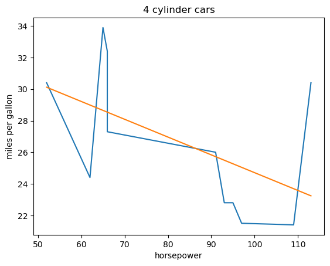
#### (1) Grouping and aggregates In addtion to ordering, we can group data by dimensions, which is most often combined with aggregates (minimum, maximum, average, count, etc.) ```python cyl, avghp, minhp, maxhp, diff = sql.query2colarr(db, """ select cyl, avg(hp), min(hp), max(hp), max(hp) - min(hp) from mtcars group by cyl order by cyl """) ``` The aggregate (windowing) function is placed around the columns. Math can also be done on columns
#### (2) Grouping and aggregates ```python pyplot.plot(cyl, minhp, label='min horsepower') pyplot.plot(cyl, avghp, label='avg horsepower') pyplot.plot(cyl, maxhp, label='max horsepower') pyplot.plot(cyl, diff, label='horsepower range') pyplot.xlabel('cylinders') pyplot.legend() ``` results in 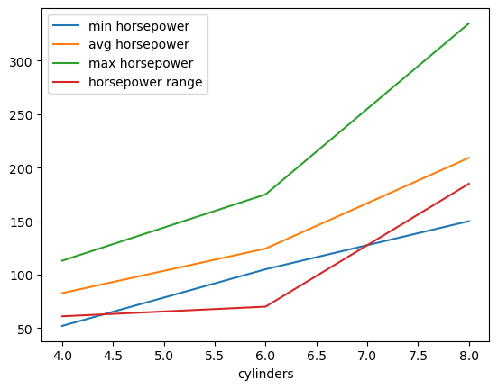 If isn't an aggregate that you want, you can add it to SQLite via *custom functions*
#### (1) Views: saving queries Queries can be saved, either permanently or temporarily, with 'CREATE VIEW...' ```python # our previous query can be stored # as a named view 'cyltohp' # in the database db.execute( """ create view cyltohp as select cyl, avg(hp) as avghp, min(hp) as minhp, max(hp) as maxhp, max(hp) - min(hp) as hprange from mtcars group by cyl order by cyl """) ```
#### (2) Views: saving queries ```python # then we can plot the same data as we did before cyl, avghp, minhp, maxhp, diff = sql.query2colarr(db, "select * from cyltohp") pyplot.plot(cyl, minhp, label='min horsepower') pyplot.plot(cyl, avghp, label='avg horsepower') pyplot.plot(cyl, maxhp, label='max horsepower') pyplot.plot(cyl, diff, label='horsepower range') pyplot.xlabel('cylinders') pyplot.legend() ``` results in
#### (3) Views: saving queries We can even query a view (or build a view from another view or views) to filter data even further ```python # we can even do a select on the view # thereby combining queries together # print the maxhp / minhp ratio # for cylinders greater than 4 print(sql.query2struct(db, 'select cyl, maxhp/(1.0*minhp) from cyltohp where cyl > 4')) # the 1.0*minhp to is convert it to a real ``` results in ```python [(6., 1.66666667) (8., 2.23333333)] ```
#### Finally, joins: combining data - Joins are arguably the most powerful capability of a relational database, and where it gets its name - I can't cover all of the different types of joins, but I will cover the most common: the *inner join* - An inner join allows us to combine several tables together that have been *normalized* on a shared key - Normalization separates data by dimension (columns) into multiple tables, and then later, joined back together on the key *(the relation)*
#### (1) Inner join, broken down Rather than storing the data like this, we can notice there is a duplication of the job to salary relationship | Name | Job | Salary | | ---- | -------- | --------- | | Amy | **Prof** | **$100k** | | Bob | HR | $80k | | Cid | **Prof** | **$100k** | And split the data into two tables, relating them by *Job*
#### (2) Inner join, broken down | Name | Job | | ---- | ---- | | Amy | Prof | | Bob | HR | | Cid | Prof | | Job | Salary | | -------- | --------- | | **Prof** | **$100k** | | HR | $80k | The two tables can be *join*ed back together later on *Job*, the relationship or the join key
#### (1) Inner join in analysis One way to use inner join is create statistics and then join it back to the original data ```python # what's the deviation of horsepower # from its average horsepower # in its cylinder group # plotted against mpg names, cyls, mpgs, diff = sql.query2colarr(db, """ select name, mtcars.cyl, mpg, hp - avghp from cyltohp inner join mtcars on mtcars.cyl = cyltohp.cyl """) # join data on horsepower statistics # using cylinders as the join key ```
#### (2) Inner join in analysis ```python pyplot.scatter(mpgs, diff, c=cyls) pyplot.xlabel('miles per gallon') pyplot.ylabel('difference of hp from average hp') pyplot.title('mpg vs. horsepower difference from equal cylinders average') for i, n in enumerate(names): pyplot.annotate(n, (mpgs[i], diff[i]), rotation=90) ``` results in 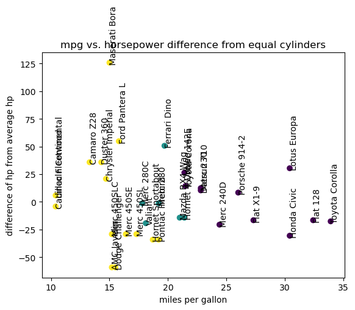
#### What else? - Creating indices, inserting selections into a new table, foreign keys, other joins, pragmas, performance tuning, key-value stores... - Recursive queries: SQLite is Turing complete - Virtual tables: use the query engine on any data - Custom functions: SQLite is extensible - Others: PostgreSQL is a full featured database - R with R Studio and R Markdown is a really nice analysis environment, too; especially with dplyr
## SQLite with ParaView Scientific and spatial visualization
#### What is scientific vis and data analysis? - Can refer to many scientific domains: biology, chemistry, physics, engineering, medical data, astronomy, cosmology, climate modeling, etc. - Typically has a spatial dimension(s), but not always: see bioinformatics and phylogeny trees - Can be simulated or experimental data - Many, many, many data formats... only a few disciplines (like bioinformatics) have come together to decide on a common format or schema - HDF5 has the *theres-no-common-schema* problem
#### SciVis Tools - Supercomputing models can generate terabytes and petabytes of data, just in a single simulation - ParaView, VisIt & EnSight were built around scientific simulation and data analysis, mid-to-late 1990's - Made to be parallel and scalable for large data sets; i.e., able to run on a supercomputer - ParaView: started at Los Alamos National Laboratory, open source; repository managed by Kitware, Inc. <http://paraview.org>
#### (1) A story: Using SQLite in ParaView - A few years back, I developed a SQLite virtual table for cosmology simulation data (the study of the large scale structure of the universe) - That made it possible for me to use many more visualization and analysis tools: Python, R, Matlab, Spark, etc.; in addition to implementing different analyses in SQL using `sqlite3` command line - Allowed me to do many analyses that might have been hard before, due to a custom data format
#### (2) A story: Using SQLite in ParaView - For scivis tools, like ParaView, they traditionally have weak support for relational databases - It has a tons of scientific data readers: 184 readers in ParaView 5.9.1, not counting custom plugins - There is a bias that relational DBs are not suited to a supercomputing environment or performant - There's an assumption you'll load the entire data into memory (get a supercomputer) - For this talk, I've made a prototype SQLite reader for ParaView to show SQL + ParaView for SciVis
#### An example: particle simulation of a galaxy - Data set acquired from yt: a visualization and analysis toolkit for astronomy and cosmology data <http://yt-project.org> - This is the easiest type of scientific data to manage in a database, since it is particle data: a point or particle is a single row - It becomes harder when there's a mesh involved (cells and nodes), but not impossible: *inner joins between cells and nodes to create mesh topology*
#### (1) Load all the data: `select * from galaxy` 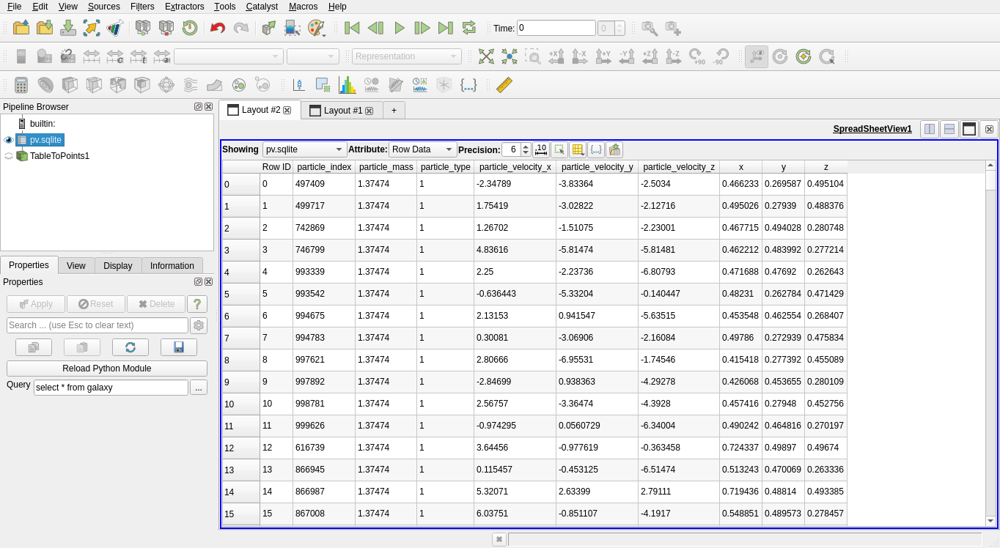
#### (2) Load all the data: `select * from galaxy` 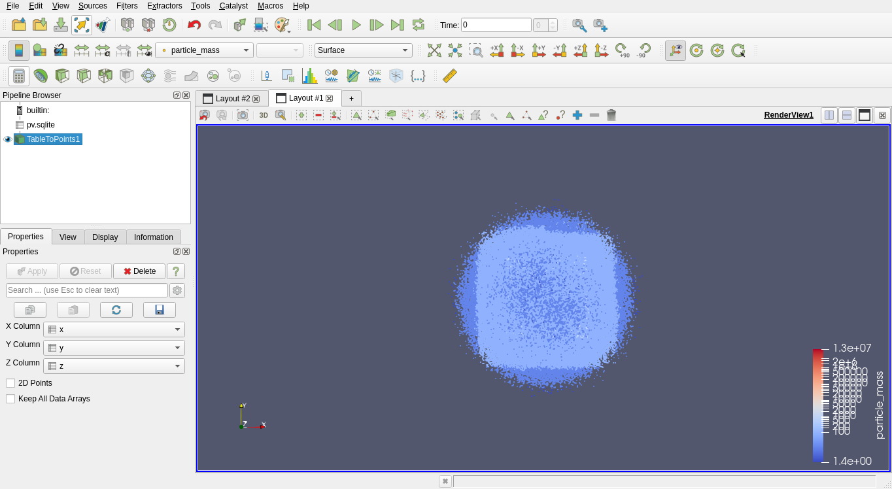
#### 1% sample: `select *, random() % 100 as r from galaxy where r = 0` 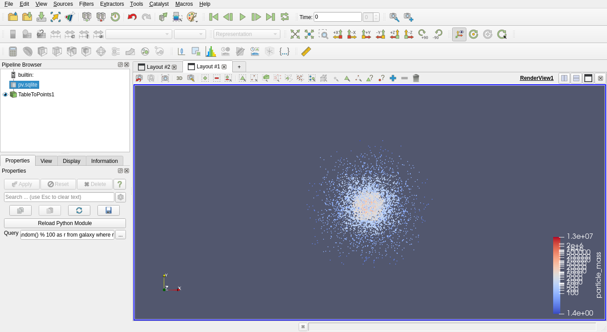
#### (1) Heaviest particles: `select * from galaxy where particle_mass > 1e6` <img src="images/pv/heaviest_3d.png" width=100%>
#### (2) Heaviest particles: `select * from galaxy where particle_mass > 1e6` 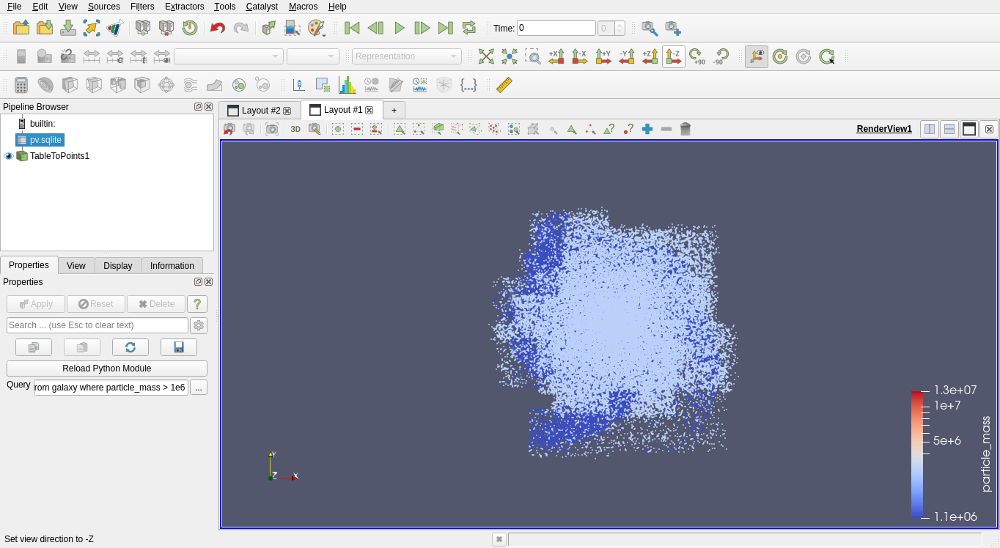
#### (1) Heaviest particles & fastest 1000: `select *, vx*vx+vy*vy+vz*vz as speed from galaxy where particle_mass > 1e6 order by speed desc limit 1000` 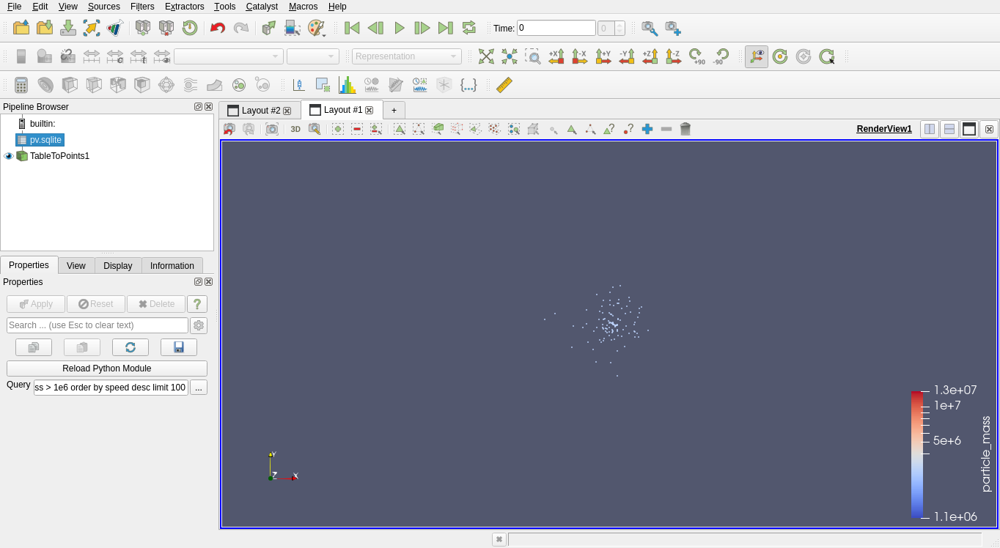
#### (2) Heaviest particles & fastest 1000: `select *, vx*vx+vy*vy+vz*vz as speed from galaxy where particle_mass > 1e6 order by speed desc limit 1000` 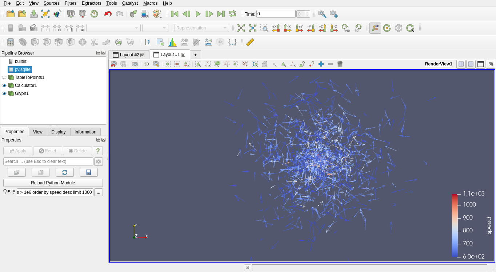
#### Combining SQLite with ParaView - That simple analysis took me about 10 minutes (in an airport terminal waiting for my flight) - Was done on a Linux-converted Samsung Chromebook 3 with only 2 cores and 4 GB - My workflow is to use SQL to do as much analysis and filtering as possible, first, and then use Python, ParaView, R, etc. to visualize the data - Live demo, if we have time? - Hopefully, I've given you something to consider for using databases more, in your own work
#### Why I gave this talk - (1) Databases are an interesting intersection between parallel and functional programming - See my github for my ORTRTA talk: <http://github.com/jonwoodring> - (2) SQL for science: making analysis easier - Write *one* reader, a SQLite virtual table - Makes the data accessible to more tools - Queries are then reusable, not locked to one tool - Databases are streaming (out of core), so you don't need a supercomputer to load the data
## Thanks! ## Questions?
## Job(s) Advertisement